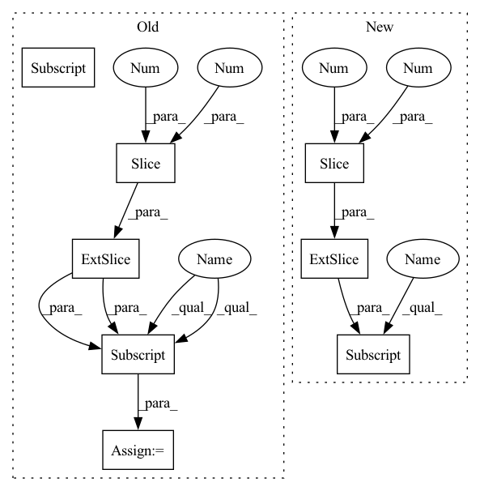

Pattern ID :30067
Before Change
if self.is_anomaly:
mask_path = str(self.mask_paths[idx])
mask = cv2.imread(mask_path)
mask = mask[150:900, :, :]
mask = cv2.cvtColor(mask, cv2.COLOR_BGR2RGB)
else:
mask = np.zeros(img.shape)
After Change
mask_path = str(self.mask_paths[idx])
mask = cv2.imread(mask_path)
mask = mask[100:1050, :, :]
mask = cv2.cvtColor(mask, cv2.COLOR_BGR2RGB)
if self.augs:
sample = self.augs(image=img, mask=mask)In pattern: SUPERPATTERN
Frequency: 3
Non-data size: 8
Instances Fragment ID: 89229585
Project Name: taikiinoue/stad
Commit Name: 3c6c7523064dd4114333484a0f914e216cdfca09
Time: 2020-07-14
Author: taikiinoue45@gmail.com
File Name: stad/datasets/somic.py
M Class Name: SomicDataset
N Class Name: SomicDataset
M Method Name: __getitem__(2)
N Method Name: __getitem__(2)
M Parent Class: Dataset
N Parent Class: Dataset
M File Name: stad/datasets/somic.py
N File Name: stad/datasets/somic.py
M Start Line: 35
M End Line: 46
N Start Line: 34
N End Line: 42
Before Change
p_frame = p[i, 0, ix].view(-1)
f_frame = features[i, :, ix]
// flatten samples and put them in the first dim
f_frame = f_frame.reshape(f_frame.size(0), -1).permute(1, 0)
if self.match_dims == 2:
coord = f_frame[:, 2:4]
elif self.match_dims == 3:
coord = f_frame[:, 2:5]
else:
raise ValueError("Match dims must be 2 or 3.")
self.clusterer.fit(coord.cpu().numpy())After Change
p_frame = p[i, 0, ix].view(-1)
f_frame = features[i, :, ix]
// flatten samples and put them in the first dim
f_frame = f_frame.reshape(f_frame.size(0), -1).permute(1, 0)
if self.match_dims == 2:
coord = f_frame[:, 1:3]
dist_mat_lat = scipy.spatial.distance.pdist(coord.cpu().numpy())
dist_mat_lat = scipy.spatial.distance.squareform(dist_mat_lat)
elif self.match_dims == 3:
coord_lat = f_frame[:, 1:3]
dist_mat_lat = scipy.spatial.distance.pdist(coord_lat.cpu().numpy())
dist_mat_lat = scipy.spatial.distance.squareform(dist_mat_lat)
coord_ax = f_frame[:, [3]] Fragment ID: 89229569
Project Name: turagalab/decode
Commit Name: 0e5761c7b77ba95abc1eca3a0ab82f346056cc26
Time: 2019-09-04
Author: gitdev@LRM.photo
File Name: deepsmlm/neuralfitter/post_processing.py
M Class Name: ConsistencyPostprocessing
N Class Name: ConsistencyPostprocessing
M Method Name: _cluster(3)
N Method Name: _cluster(3)
M Parent Class: PostProcessing
N Parent Class:
M File Name: deepsmlm/neuralfitter/post_processing.py
N File Name: deepsmlm/neuralfitter/post_processing.py
M Start Line: 338
M End Line: 365
N Start Line: 391
N End Line: 430
Before Change
if self.is_anomaly:
mask_path = str(self.mask_paths[idx])
mask = cv2.imread(mask_path)
mask = mask[150:900, :, :]
mask = cv2.cvtColor(mask, cv2.COLOR_BGR2RGB)
else:
mask = np.zeros(img.shape)
After Change
img = cv2.cvtColor(raw_img, cv2.COLOR_BGR2RGB)
mask_path = str(self.mask_paths[idx])
mask = cv2.imread(mask_path)
mask = mask[100:1050, :, :]
mask = cv2.cvtColor(mask, cv2.COLOR_BGR2RGB)
if self.augs:
sample = self.augs(image=img, mask=mask) Fragment ID: 89229587
Project Name: taikiinoue/stad
Commit Name: 3c6c7523064dd4114333484a0f914e216cdfca09
Time: 2020-07-14
Author: taikiinoue45@gmail.com
File Name: stad/datasets/somic.py
M Class Name: SomicDataset
N Class Name: SomicDataset
M Method Name: __getitem__(2)
N Method Name: __getitem__(2)
M Parent Class: Dataset
N Parent Class: Dataset
M File Name: stad/datasets/somic.py
N File Name: stad/datasets/somic.py
M Start Line: 35
M End Line: 46
N Start Line: 34
N End Line: 42
Before Change
np.random.seed(seed=seed)
indices = np.arange(pos_triples.shape[0])
np.random.shuffle(indices)
pos_triples = pos_triples[indices]
// Create labels
subject_relation_pairs = pos_triples[:, 0:2]
entities = np.arange(kg_embedding_model.num_entities)
labels = []
for tuple in subject_relation_pairs:
indices_duplicates = (subject_relation_pairs == tuple).all(axis=1).nonzero()
objects = pos_triples[indices_duplicates, 2:3]
objects = np.unique(np.ndarray.flatten(objects))
label_vec = np.in1d(entities, objects) * 1
labels.append(label_vec)
After Change
np.random.seed(seed=seed)
indices = np.arange(pos_triples.shape[0])
np.random.shuffle(indices)
pos_triples = pos_triples[indices]
num_pos_triples = pos_triples.shape[0]
// Create labels
subject_relation_pairs = pos_triples[:, 0:2]
entities = np.arange(kg_embedding_model.num_entities)
labels = []
for subj_rel in subject_relation_pairs:
subj_rel_rep = np.repeat(subj_rel,axis=0)
label = (pos_triples[:,0:2] == subj_rel).all(axis=1)
// objects = pos_triples[mat, 2:3]
// objects = np.unique(np.ndarray.flatten(objects))
// label_vec = np.in1d(entities, objects) * 1 Fragment ID: 89229588
Project Name: pykeen/pykeen
Commit Name: c9302b9f07967d1d474435e53355e3bd308cfd45
Time: 2018-09-12
Author: ali-mehdi@live.de
File Name: src/utilities/train_utils.py
M Class Name: AnonimousClass
N Class Name: AnonimousClass
M Method Name: train_conv_e_model(7)
N Method Name: train_conv_e_model(7)
M Parent Class:
N Parent Class:
M File Name: src/utilities/train_utils.py
N File Name: src/utilities/train_utils.py
M Start Line: 108
M End Line: 140
N Start Line: 100
N End Line: 128